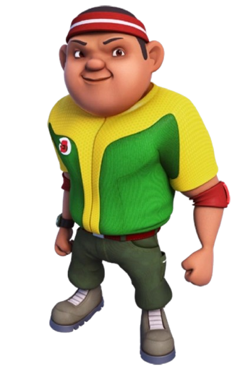
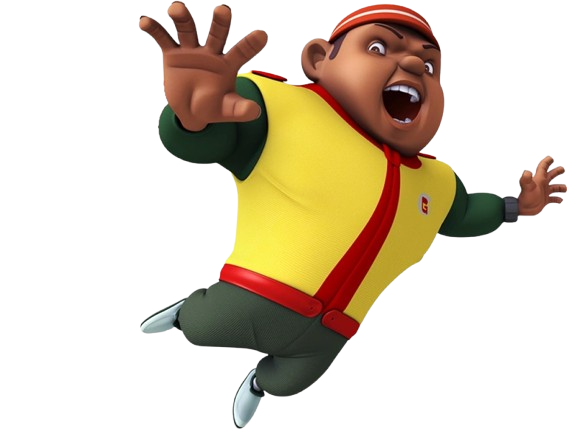
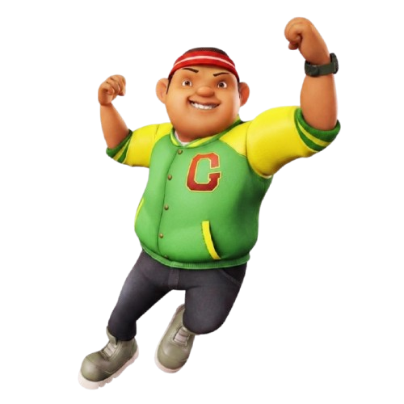
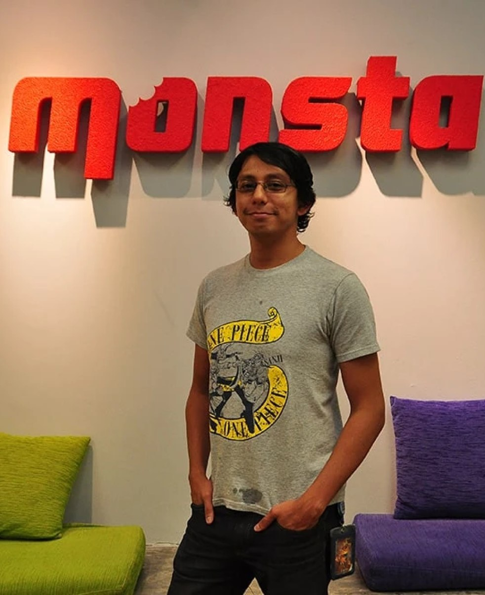

BoBoiBoy is the titular protagonist of a premier Malaysian animated franchise, centered on a brave and loyal young boy who wields the extraordinary ability to manipulate and split into various elemental avatars. Originally a local hero protecting his grandfather's cocoa shop in Pulau Rintis, his journey has expanded into a galactic saga where he serves as a high-ranking member of TAPOPS, an organization dedicated to protecting sentient Power Spheras from intergalactic threats. As the son of the legendary hero Amato and the grandson of Tok Aba, BoBoiBoy balances his immense responsibilities with a humble, grounded personality, constantly evolving his powers from basic elemental forms into advanced Stage 2 evolutions and powerful fusions. The series is celebrated for seamlessly blending high-stakes superhero action with Southeast Asian cultural values, emphasizing that his greatest strength lies not just in his elemental mastery, but in his unwavering bond with his friends and family.

CHARACTER REVOLUTION

Original Series Look
This reflects Gopal's classic appearance from the early BoBoiBoy series, featuring his signature green vest and playful attitude as BoBoiBoy's snack-loving best friend.

Galaxy Series Look
This represents his updated BoBoiBoy Galaxy appearance, featuring a modern space agent attire and refined molecular manipulation skills as a core member of TAPOPS.
VOICE ACTOR

Dzubir Mohammed Zakaria is a multi-talented professional at Monsta who is best known as the voice actor for the character Gopal in both the original Malay version and the English dub of the BoBoiBoy series. While he has not written a public description of himself in that specific role, his professional and personal profile was highlighted in the 73rd issue of the BoBoiBoy comic magazine. This feature revealed that Dzubir hails from Ipoh, Perak, and enjoys hobbies such as listening to music, watching movies, and playing games. Additionally, the comic noted his personal preferences for chocolate, sweets, coffee, and tea, as well as his aspiration to travel to Jordan and New Zealand in the future. Beyond his iconic voice work, Dzubir plays a vital role behind the scenes at the studio, where he serves as an animation director and voice director, contributing significantly to the production quality of the series.
SIGNATURE MOVES

GOPAL STRENGTH
Gopal is a key TAPOPS agent and molecular manipulation expert capable of converting matter into snacks, weapons, and tactical assets. While he relies heavily on his wits and creativity under pressure, his versatility makes him an unpredictable asset in battle.